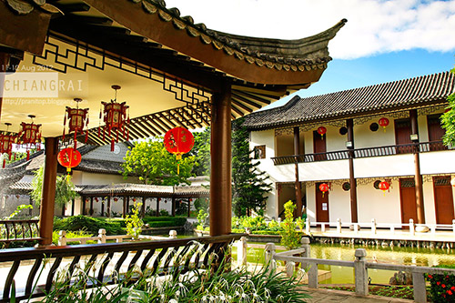

| CONTACT US 333 Moo.1,Thasud, Muang, Chiang-Rai 57100 Thailand +88-8565656 reviewmfu@gmail.com mrirw@thxs.com |
ใช้เพื่อการศึกษาเท่านั้น |
ศูนย์ภาษาและวัฒนธรรมจีน
 เมื่อเดือนมีนาคม พุทธศักราช 2542 นายประจวบ ไชยสาส์น รัฐมนตรีว่าการทบวงมหาวิทยาลัย พร้อมด้วยรองศาสตราจารย์ ดร.วันชัย ศิริชนะ ปลัดทบวงมหาวิทยาลัยเดินทางไปเยี่ยมเยือน และแสวงหาความร่วมมือด้านการศึกษากับรัฐบาลประเทศจีน และมหาวิทยาลัยในประเทศจีน ในการสนทนาแลกเปลี่ยนความคิดเห็นครั้งนี้คณะรัฐบาลประเทศไทยเสนอให้รัฐบาลประเทศจีน จัดตั้งศูนย์ภาษาและวัฒนธรรมจีน ณ มหาวิทยาลัยแม่ฟ้าหลวง เพื่อเป็นการเฉลิมฉลองวันคล้าย วันพระราชสมภพของสมเด็จพระศรีนครินทราบรมราชชนนี ครบรอบ 100 ปี ในปี พุทธศักราช 2543 รัฐบาลจีนได้ให้ความเห็นชอบในการจัดตั้งศูนย์ภาษาและวัฒนธรรมจีน ณ มหาวิทยาลัยแม่ฟ้าหลวง โดยยินดีให้ความช่วยเหลือแบบให้เปล่าและยังสนับสนุนจัดหาอุปกรณ์ในการเรียนการสอนพร้อม หนังสือตำราเอกสารประกอบการสอนต่าง ๆ เพื่อให้มหาวิทยาลัยแม่ฟ้าหลวงใช้ใน การเรียนการสอน ภาษาจีนอย่างมีประสิทธิภาพ ระหว่างวันที่ 7 ถึง 27 สิงหาคม พุทธศักราช 2543 รัฐบาลจีนได้ส่งคณะศึกษาและสำรวจพื้นที่ก่อ สร้างศูนย์ภาษาและวัฒนธรรมจีนจากสถาบัน
China Southwest Architectural Design and Research Institute เพื่อให้มาทำการสำรวจและออกแบบการก่อสร้างอาคารศูนย์ภาษาและ วัฒนธรรมจีน ซึ่งหัวหน้าคณะที่มาดำเนินการเรื่องนี้ คือนายเฉิน ไค เม่ย (Mr. Chen Kai Mei) และคณะได้มาปฏิบัติงานที่มหาวิทยาลัยแม่ฟ้าหลวง ประมาณ 20 วัน เพื่อสำรวจพื้นที่และออก แบบอาคาร การก่อสร้างศูนย์ภาษาและวัฒนธรรมจีน ได้ยึดเอาศิลปะและสถาปัตยกรรมแบบ ซูโจว เป็นโครงสร้างของอาคาร โดยมีกำแพงล้อมรอบตัวอาคารทั้งหมดสี่ด้าน ภายในประกอบ ด้วยสวนหิน และสระบัว ศาลาดูปลา ที่สร้างตามแบบดั้งเดิมของจีน
ติดต่อศูนย์ภาษาและวัฒนธรรมจีนสิรินธร มหาวิทยาลัยแม่ฟ้าหลวง
333 หมู่ 1 ต.ท่าสุด อ.เมือง จ. เชียงราย 57100
โทรศัพท์ : 0-5391-7097
โทรสาร : 0-5391-7093
E-mail: sclc@mfu.ac.th
แผนที่
| CONTACT US 333 Moo.1,Thasud, Muang, Chiang-Rai 57100 Thailand +88-8565656 reviewmfu@gmail.com mrirw@thxs.com |
ใช้เพื่อการศึกษาเท่านั้น |